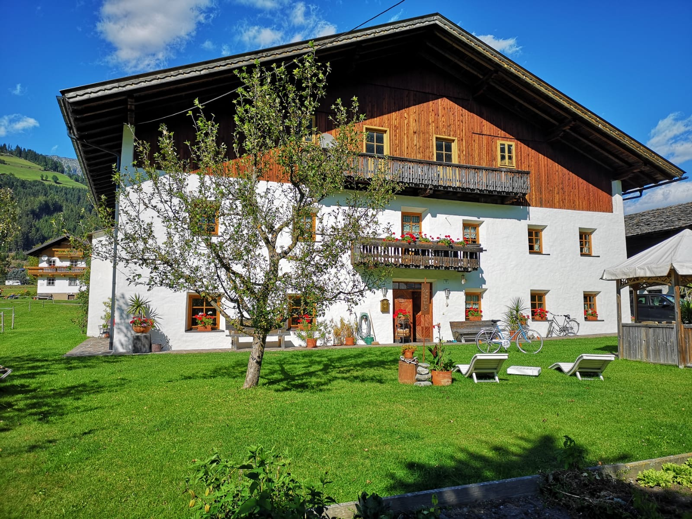

Austria, a landlocked country in Central Europe, is renowned for its rich cultural heritage and significant historical legacy. As the heart of the Habsburg Empire for centuries, Austria played a pivotal role in shaping European politics, art, and culture. Vienna, its capital, became a cultural hub during the 18th and 19th centuries, home to iconic figures like Mozart, Beethoven, and Freud. Austria's baroque architecture, imperial palaces, and classical music traditions still influence its cultural identity today. Historically, Austria has also been shaped by its geographical position, serving as a crossroads between Eastern and Western Europe, which is reflected in its diverse cultural traditions. After the collapse of the Austro-Hungarian Empire in 1918, Austria underwent political upheavals but maintained its distinct cultural and intellectual contributions. Today, Austria is known for its alpine landscapes, strong coffeehouse culture, and as a hub for winter sports, combining a deep respect for its past with a vibrant, modern identity.
This is a picture of the house I grew up in. It's a farmhouse that's over 500 years old. As you can tell, this style of house is very different compared to anything we have here in California.
